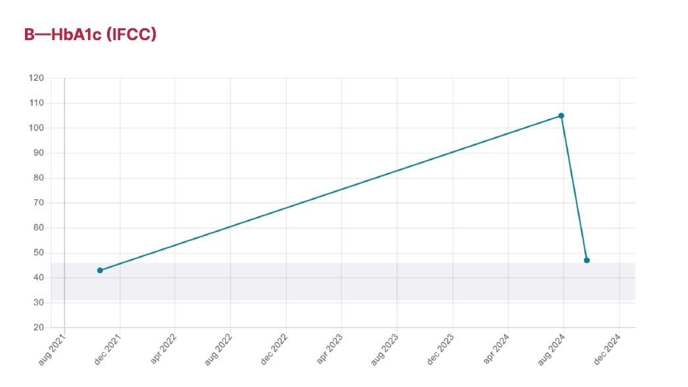

My Type 2 Diabetes Journey: From Crisis to Control
I have type 2 diabetes, and I managed to take control of it with the right diet. These are the recipes I created, and these are the photos I took myself—simple, real, no frills.
You won’t find long stories or ads cluttering the way to my recipes. I’m not here to sell supplements, and I’m not backed by any brands. This is purely for you and your family’s health.
At one point, my HbA1c spiked to 110 mmol/mol (12.2% in American units), which was dangerously high. HbA1c measures your average blood sugar levels over the last two to three months. It gives you a clearer picture of your long-term blood sugar control. I didn’t listen to my body for far too long, and it caught up with me. But in just two months, I’ve already managed to bring my HbA1c back down to near normal levels.
Here's the latest progress—this graph shows my long-term HbA1c improvement:
Remember, always consult with your doctor. I’m not a doctor myself; I have a science background but no formal training as a dietician. I just love food—too much, in fact, and that was my undoing. Now it’s time to use that love for food to make healthier choices and help others avoid the same mistakes.
I don’t use fancy photography to make the recipes look better than they are. What you see is what you get, and sometimes, it might not look great—but it will always be easy and healthy! Everything is created in my own kitchen with no special restaurant gadgets; just like in yours. I do recommend a few tools (see Healthy Tips), but nothing you can’t get at a local shop.
If you want to support me and keep this site free of advertising, please consider donating. You’ll help me keep this site free and accessible for everyone.
Keeping My Blood Sugar in Check
Since adopting this diet, my blood sugar has remained well-controlled. As you can see from the chart, my average blood sugar sits around 5.2 mmol/L (93.6 mg/dL in American units), with a variation of ±0.8 mmol/L (±14.4 mg/dL).
Maintaining these levels is crucial to avoid dangerous spikes or drops in blood sugar, which can cause long-term complications if left unmanaged. The goal for most people with diabetes is to keep their blood sugar between 4.0–7.0 mmol/L (72–126 mg/dL) before meals. This range can vary depending on individual health circumstances, so always consult with your healthcare provider.
You don’t need fancy or expensive food to achieve these numbers—just smart meal planning and a bit of dedication. It's about eating balanced, real food, and monitoring how your body responds. These recipes are designed to help you keep things simple but effective.